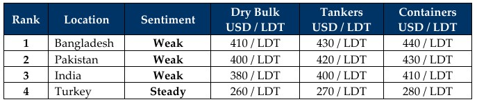

inWeekly Demolition Reports03/11/2025

A spooky end to October delivered its share of unending surprises not only across the ship recycling arena, but even global markets at large.At the onset, Trump wraps up his Southeast Asian glamour tour touting deals made, especially one with China where an embargo on retaliatory trade sanctions and set offs between the two nations was set for at least a year, bringing a sigh of relief to embattled vessels enroute to discharge in Chinese waters and even global consumers at large. With September inflationary numbers on the rise and U.S. figures being released only a couple of weeks back (due to the ongoing government shutdown), November seems on track to deliver another set of surprises for ship recycling markets. Oil meanwhile slipped nearly 1% during the week as it lingered around USD 60.67, with OPEC+ announcing further cutbacks in the supply of oil in upcoming Q1 2026 (adieu 2025), leaving lingering expectations of increasing gas prices.
Supply side was no different as the Baltic Exchange’s Dry Index also reported a noteworthy fall as the overall index fell nearly 1.3% for the week (on the back of all sub-segments reporting losses), down nearly 8% for the month of October and further marking its first monthly decline since April 2025. And this slowdown is increasingly presenting itself via tonnages of various sizes and types across the Indian sub-continent ship recycling landscape, especially in India where despite the lowest prices in the region, Alang continues to report an eye-popping number of occasional arrivals. And yet, the glut of tonnage sailing the high seas remains disproportionately ratioed against the number of units recycled over the last several years, leaving a potential surge of incoming tonnage on the horizon.
As a result, the ship recycling industry has continued to endure a stultifying and sluggish Q4 (in line with the numerous quarters spanning the last few years) with declines evident across all sectors and sales (barring the occasional stunners) occurring at ever deteriorating levels. An eye-catching duo of LNGs sold last week (as a clear-out from this beleaguered sector continues) were just such a highlight, including a seemingly steady trickle of older dissolute handymax sized bulk carriers sold in recent weeks as well (as confirmed by the various port reports). Sales of sanctioned vessels have also shaken the industry with fixtures being reported at well below market pricing into a dithering Alang, establishing a two-tiered price system that is causing confusion and consternation in the industry.
Overall, despite a reported end to the U.S.-Chinese trade tit-for-tat, the constant volatility and ever-changing headline decisions on tariffs and sanctions are now being treated with assured suspicion and careful wariness by international businesses and MNCs. As such, the final months of the year will wind up another haunting 202X for recycling locations, marked by declining levels, starved supply, regulatory red tape, HKC troubles, immovable recycled product, political unrest, tariffs, oil sanctions, and a whole lot more. Someone call Hollywood and make a movie already.
For Week 44 of 2025, GMS Market Rankings / vessel indications are as below

📄 Download PDF: Ship-recycling-market-insight-Week-44-10-31-2025-Halloween_November.pdf
Source: GMS,Inc.https://www.gmsinc.net/gms_new/index.php/web